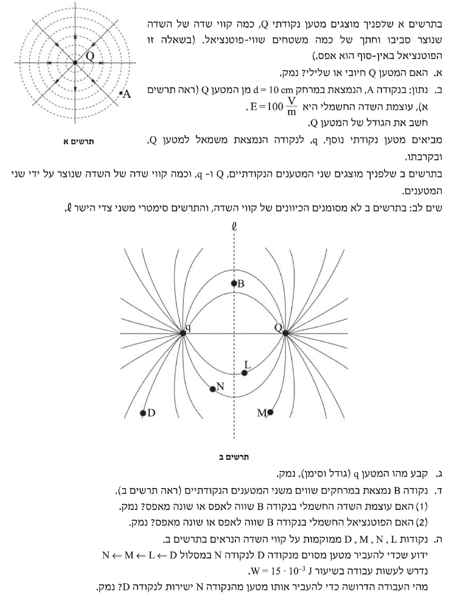

פתרון מודרך: בגרות בפיזיקה
חשמל 2015, שאלה 1
שדה חשמלי, חוק קולון, ופוטנציאל חשמלי של מטענים נקודתיים.
עודכן:
--- --:--:--

[תמונת השאלה המקורית]
לא נמצאה תמונה בשם question-image.png באותה תיקייה.
מה נתון: בתרשים א' מוצג מטען נקודתי \(Q\) וקווי השדה החשמלי שהוא יוצר סביבו. אנו רואים כי קווי השדה יוצאים מן המטען ומופנים כלפי חוץ.
מה מחפשים: לקבוע האם המטען \(Q\) הוא חיובי או שלילי ולנמק את הקביעה.
נוסחאות ועקרונות בשימוש:
כיוון קווי שדה חשמלי של מטען נקודתי
פתרון צעד-אחר-צעד:
לפי הגדרה, קווי שדה חשמלי מתארים את כיוון הכוח החשמלי שיפעל על מטען בוחן חיובי. מטען בוחן חיובי יידחה ממטען חיובי ויימשך למטען שלילי. לכן, קווי שדה מתרחקים ויוצאים ממטען חיובי, ומתכנסים אל תוך מטען שלילי.
מכיוון שבתרשים א' קווי השדה יוצאים ומתרחקים מהמטען \(Q\), הרי שהמטען דוחה מטענים חיוביים.
מסקנה: המטען \(Q\) הוא מטען חיובי.
טיפ מורה:
כדי לא להתבלבל בכיוונים, דמיינו "מטען בוחן" חיובי קטן העומד בסמוך למטען הנבדק. קווי השדה תמיד מראים לאן מטען הבוחן הזה יידחף. כיוון שפלוס דוחה פלוס – קווי השדה יתרחקו ממטען חיובי. כיוון שמינוס מושך פלוס – קווי השדה יתקרבו למטען שלילי.
מה נתון:
בנקודה A, הנמצאת במרחק \(d = 10 \text{ cm}\) מהמטען, עוצמת השדה היא \(E = 100 \text{ V/m}\). בנוסף, קבוע קולון הוא \(k = 9 \cdot 10^9 \frac{\text{N}\cdot\text{m}^2}{\text{C}^2}\).
מה מחפשים:
לחשב את הגודל של המטען \(Q\) בערך מוחלט (ביחידות קולון).
נוסחאות ועקרונות בשימוש:
\( E = k\frac{|q|}{r^2} \)
חישוב:
שלב 0 - המרת יחידות (MKS)
עלינו להמיר את המרחק למטרים:
\[ r = 10 \text{ cm} = 0.1 \text{ m} \]
שלב 1 - הצבה בנוסחה
נבודד את גודל המטען מתוך נוסחת השדה החשמלי:
\[ |Q| = \frac{E \cdot r^2}{k} \]
כעת, נציב את הנתונים ביחידות MKS שסידרנו:
\[ |Q| = \frac{100 \cdot (0.1)^2}{9 \cdot 10^9} \]
\[ |Q| = \frac{100 \cdot 0.01}{9 \cdot 10^9} = \frac{1}{9 \cdot 10^9} \]
\[ |Q| = 1.11 \cdot 10^{-10} \text{ C} \]
מסקנה: גודל המטען הוא \(|Q| = 1.11 \cdot 10^{-10} \text{ C}\).
אזהרת מכשול:
יחידות! תמיד בדקו שהצבנו מרחק במטרים (m) ולא בסנטימטרים. בנוסף, כשמבקשים "גודל", הכוונה לערך המוחלט. אנו כבר יודעים מסעיף א' שהמטען עצמו חיובי, ולכן ערכו הוא \(+1.11 \cdot 10^{-10} \text{ C}\).
מה נתון: תרשים ב' מציג שני מטענים \(q\) ו-\(Q\). קווי השדה מחברים ביניהם. הציור סימטרי לחלוטין משני צידי ציר \(l\).
מה מחפשים: לקבוע את גודלו ואת סימנו של המטען \(q\), תוך מתן נימוק.
נוסחאות ועקרונות בשימוש:
קווי שדה בין שני מטענים נקודתיים
עקרון הסימטריה בשדות
פתרון צעד-אחר-צעד:
לגבי הסימן: אנו רואים כי קווי השדה בתרשים ב' מחברים ישירות בין המטען \(q\) למטען \(Q\). קווי שדה חשמלי יוצאים ממטען חיובי ונכנסים למטען שלילי. מכיוון שהסקנו בסעיף א' ש-\(Q\) הוא מטען חיובי, קווי השדה חייבים לצאת מ-\(Q\) ולהיכנס אל המטען \(q\). לכן, המטען \(q\) חייב להיות בעל סימן מנוגד ל-\(Q\), כלומר שלילי.
לגבי הגודל: מספר קווי השדה היוצאים או נכנסים ממטען פרופורציונלי לגודל המטען. כיוון שנאמר שהתרשים סימטרי משני צידי ציר \(l\), פירוש הדבר שמספר קווי השדה סביב כל מטען זהה לחלוטין. מתוך הסימטריה מתחייב שגדלי המטענים שווים בדיוק.
\[ |q| = |Q| = 1.11 \cdot 10^{-10} \text{ C} \]
מסקנה: המטען \(q\) הוא שלילי. גודלו הוא \(|q| = 1.11 \cdot 10^{-10} \text{ C}\).
כוחה של סימטריה:
בפיזיקה, ציור סימטרי מצביע על נתונים סימטריים. כשאנחנו מסתכלים על הציור ורואים שצד ימין נראה בדיוק כמו צד שמאל (ממש כמו תמונת מראה של קווי השדה), אנחנו יכולים להסיק מיד שהמטענים שיוצרים את התמונה הזאת שווים בגודלם המוחלט.
מה נתון: בתרשים ב' משורטטים קווי השדה החשמלי בין המטענים. נקודה B נמצאת על ציר הסימטריה \(l\) בדיוק על קו השדה האופקי המחבר ביניהם.
מה מחפשים: האם עוצמת השדה החשמלי (השדה השקול) בנקודה B שווה לאפס או שונה מאפס? לנמק.
נוסחאות ועקרונות בשימוש:
תכונות קווי שדה חשמלי
פתרון צעד-אחר-צעד:
על פי הגדרתם, קווי השדה החשמלי מייצגים בכל נקודה במרחב את כיוונו של השדה השקול (המשיק לקו השדה). בתרשים ב' ניתן לראות בבירור כי עובר קו שדה ישר המחבר ישירות בין שני המטענים וחוצה את הנקודה B.
מכיוון שהסקנו כי המטען \(Q\) (מימין) הוא חיובי והמטען \(q\) (משמאל) הוא שלילי, קווי השדה מוכרחים לצאת מהמטען החיובי ולהיכנס אל תוך המטען השלילי.
לכן, כיוון קו השדה בנקודה B הוא אופקי ומכוון שמאלה (מהמטען \(Q\) לעבר המטען \(q\)). כיוון שיש לשדה בנקודה זו כיוון מוגדר במרחב, מובן מאליו שעוצמתו אינה אפס.
מסקנה: עוצמת השדה החשמלי בנקודה B שונה לאפס (השדה מכוון שמאלה).
טיפ מורה (הסבר אינטואיטיבי):
דרך פשוטה להבין זאת היא לדמיין "מטען בוחן" חיובי קטן העומד בנקודה B. המטען החיובי \(Q\) (מימין) ידחוף אותו שמאלה, והמטען השלילי \(q\) (משמאל) ימשוך אותו גם כן שמאלה. מכיוון ששני המטענים משפיעים עליו בדיוק לאותו הכיוון (שמאלה), ההשפעות שלהם מתחברות ולא מתבטלות, ולכן השדה אינו אפס. בנוסף, קווי השדה שכבר משורטטים מראש חוסכים לנו עבודה ומראים לנו את התוצאה הזו ויזואלית!
מה נתון: אותם נתונים מסעיף קודם (נקודה B במרחקים שווים מהמטענים).
מה מחפשים: האם הפוטנציאל החשמלי בנקודה B שווה לאפס או שונה מאפס? לנמק.
נוסחאות ועקרונות בשימוש:
\( V = k\frac{q}{r} \)
\( V_{total} = \Sigma V_i \) (עקרון הסופרפוזיציה לפוטנציאל - חיבור סקלרי)
פתרון צעד-אחר-צעד:
בניגוד לשדה חשמלי, פוטנציאל חשמלי הוא גודל סקלרי. אין לו כיוון במרחב, ולכן אנו פשוט מחברים את הערכים באופן אלגברי (עם הסימנים שלהם).
הפוטנציאל הכולל בנקודה B הוא סכום הפוטנציאלים שיוצר כל מטען בנפרד:
\[ V_B = V_q + V_Q = k\frac{q}{r} + k\frac{Q}{r} \]
אנו יודעים כי המרחק \(r\) מהנקודה B לכל אחד מהמטענים הוא זהה (כי הנקודה על ציר הסימטריה המרכזי). בנוסף, מצאנו ששני המטענים שווים בגודלם המוחלט אך הפוכים בסימנם, כלומר: \(q = -Q\). (בדוגמה שלנו \(Q\) חיובי ו-\(q\) שלילי).
נציב זאת במשוואה:
\[ V_B = k\frac{-Q}{r} + k\frac{Q}{r} = 0 \]
הפוטנציאל השלילי שמייצר \(q\) מקוזז בדיוק על ידי הפוטנציאל החיובי שמייצר \(Q\).
מסקנה: הפוטנציאל החשמלי בנקודה B שווה לאפס.
נקודה למחשבה:
ראינו כעת מקרה שבו השדה שונה מאפס אבל הפוטנציאל הוא אפס! זה ממחיש היטב את ההבדל העמוק בין גודל וקטורי לגודל סקלרי בפיזיקה. כל נקודה על הקו המקווקו \(l\) נמצאת בפוטנציאל אפס (זהו משטח שווה פוטנציאל שעובר באמצע המערכת).
מה נתון: כדי להעביר מטען מסוים מנקודה D לנקודה N במסלול מפותל המוגדר על ידי \(D \to L \to M \to N\), נדרש לעשות עבודה של \(W = 15 \cdot 10^{-3} \text{ J}\).
מה מחפשים: מהי העבודה הדרושה כדי להעביר את אותו מטען ישירות מנקודה N לנקודה D. (שימו לב: שואלים על העברה בכיוון ההפוך מ-N ל-D).
נוסחאות ועקרונות בשימוש:
הכוח החשמלי ככוח משמר
\( W_{A \to B} = q(V_A - V_B) \)
פתרון צעד-אחר-צעד:
עקרון יסוד באלקטרוסטטיקה קובע כי הכוח החשמלי הוא כוח משמר. המשמעות של עקרון זה היא שהעבודה הנדרשת (או מתבצעת) בעת העברת מטען בתוך שדה חשמלי תלויה אך ורק בנקודת ההתחלה ובנקודת הסיום, ואינה תלויה כלל במסלול שבו עובר המטען.
לכן, עבודת הכוח החשמלי מהנקודה D לנקודה N במסלול המפותל שווה בדיוק לעבודת הכוח החשמלי במסלול הישיר:
\[ W_{D \to N} = 15 \cdot 10^{-3} \text{ J} \]
אך השאלה מבקשת את העבודה הנדרשת להעביר את המטען בכיוון ההפוך: מהנקודה N לנקודה D.
נזכור שעבודה של גורם חיצוני תלויה בהפרש הפוטנציאלים. אם עבודה חיובית נדרשה כדי ללכת מ-D ל-N, אזי כאשר נלך בכיוון ההפוך (מ-N ל-D), העבודה הנדרשת תהיה זהה בגודלה אך הפוכה בסימנה.
\[ W_{N \to D} = -W_{D \to N} = -15 \cdot 10^{-3} \text{ J} \]
מסקנה: העבודה הדרושה כדי להעביר את המטען ישירות מ-N ל-D היא \(W = -15.0 \cdot 10^{-3} \text{ J}\).
אל תתנו למסלול לבלבל אתכם!
בבחינות הבגרות אוהבים לצייר או לתאר מסלולים מפותלים (\(D \to L \to M \to N\)) רק כדי לבדוק שאתם מבינים את מושג הכוח המשמר. תמיד התעלמו מהדרך והסתכלו רק איפה התחלנו ואיפה סיימנו. שימו לב היטב לכיוון ההליכה (הלוך או חזור) כי הוא משנה את סימן העבודה!